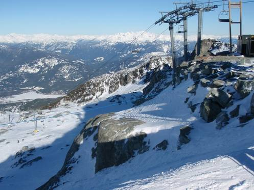
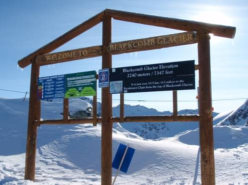
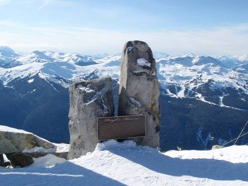

□3日目(2/14)Squamish⇔Whistler (2)
この日は朝からピザ。スーパーで買っておいたチーズとスライスサラミのみが載っているピザ生地に、たっぷりのコーンとマッシュルームを載せてオーブンに。焦げ目が付くまでじっくり焼くと、ご馳走ピザの焼き上がり～。

車に乗ってウィスラーへ。今日も快晴！ゴンドラ乗り場まで行くと、明らかに昨日より人が多いことが分かる。土曜日だからであろう。今日は一日ブラッコム山で滑走する。まずはBlackcomExcalibur Gondola(ブラッコム･エクスカリバーゴンドラ)に乗る。ブラッコム山はウィスラー山に比べ、急斜面が多く、コブ付き斜面も多くなっている。中腹には中級・上級のコース数が非常に多く、スピードの出る急斜面コースや、コブだらけのモーグルコースなど、それぞれ様子が違っており、楽しい。ジャンプ台や巨大なハーフパイプ等が作られているパークコースも、難易度別で数種類ある。Glacier(氷河)Exp.というクワッドリフトに乗ると、一気に森林限界を超えた白銀エリアへと出る。ゲレンデはやはり広大だ。リフト待ちの列が長く伸びるほど人は多いが、コースを滑っていて、他の人とぶつかりそうになるというような窮屈感はなく、自由に好きな所を滑れるという開放感が気持ちいい。


2440mのブラッコム山の山頂までは行けないが、ゲレンデ最高点の2240m地点へは”Showcase
T-Bar”(ショウケースTバー)というリフトに乗って行ける。変わったリフトで、T字を逆さにしたようなバーがケーブルからぶらさがっており、このバーに2人で腰掛け、つかまることで斜面を滑り上がっていく。スキーやボードの板は雪面に付いたままである。初めて乗る者にとってはこれがなかなか難しい。篠田と堀部は2回もリフトから転げ落ちた。

Showcase
T-Barを降りると、右手にHorstmanGlacier(ホルストマン･グレイシャー)という氷河ゲレンデが広がっているのだが、なぜか他の多くの人はそちらへは行かず、スキー板を外して正面の斜面を登っていく。不思議に思い、僕らも斜面をしばらく登っていくと、迫力満点の相当巨大な氷河ゲレンデが左手に現れた。これが州立公園にも指定されているBlackcomb
Glacier(ブラッコム･グレイシャー)である。難易度は中級となっていて、旗と旗が設置された間に圧雪整備された滑走面もあるが、この巨大な氷河にとっては、一本の細い線でしかない。実際にこの圧雪面を滑っている人はあまりおらず、みな思い思いの所を滑走している。もちろん雪質は最高。しかし、所々で岩が露出している所があるので気を付けないといけない。氷河上のロングランを楽しむと、コースはそのまま樹林帯のコースにつながっていく。このコースも長くて楽しめた。


次に向かったエリアは”HorstmanT-Bar”(ホルストマンTバー)というリフトを昇ったところから広がる”7th
Heaven”(セブンスヘブン)という白銀エリア。ここも広大なエリアだが、整備されたコースがしっかりと区切られており、緩やかな初級コースもある。もちろん中級・上級コースはたくさんあり、中級コースの”Hugh’s
Heaven”(ヒューズ･ヘブン)、”Panorama”(パノラマ)は最高の雪質を最高のスピードで疾走でき、上級コースの”Sunburn”(サンバーン)、”Angel
Dust”(エンジェル･ダスト)はコブだらけ。7th
Heaven Exp.(セブンスヘブン･エクスプレス)に乗ることで、効率よく何度も楽しむことができる。

昼食は7th
Heavenの上部にあるレストラン”HorstmanHut”で食べることに。屋外のテラスで食べることができ、ここからの眺めは非常に良い。立地は最高だが、難点は値段がちと高いことか。普通に食べると$15を軽く越えてしまう。

昼食後に7th
Heavenで滑走していた時にアクシデント発生！直登が岩に腰を打ちつけ負傷。ここで直登はゲレンデを降りることになってしまった。残った3人で滑走中、今度は堀部が急なコブ斜面で大転倒！なんとこの衝撃でビンディングの部品が90度ねじれて、がんばっても直らなくなってしまった。しかしリフト降り場の詰め所に板を持っていき、堀部の片言英語で事情説明すると、スタッフの人がハンマーでがんがんと叩いて直してくれた。

この後、中腹にあるモーグル斜面に挑戦したあと下山。スコーミッシュまで戻り、”Save
on Foods”という大型スーパーへ。パスタやお菓子など幅広い種類の商品が量り売りされており楽しい。野菜や肉などの生鮮食品も種類豊富だ。夕飯にはビーフシチューを作って食べた。